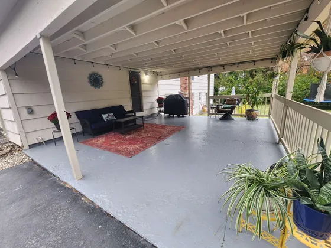
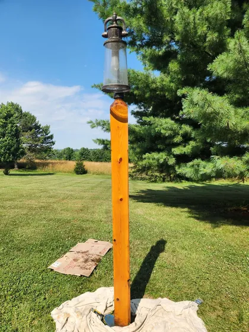
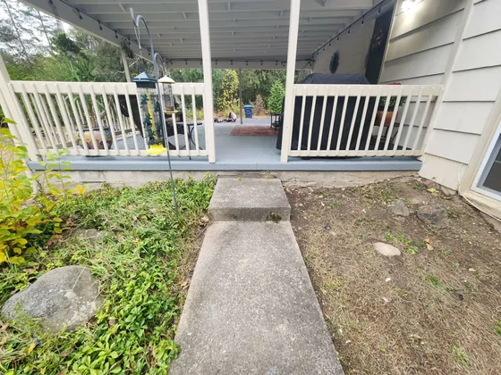
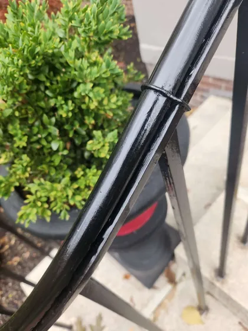

Selected project photos
A closer look.
A little more possibility.
Browse the work by theme. Some photos appear in more than one theme when they show more than one kind of work, so every filter gives you a useful view instead of a one-photo dead end.
8 photos · All work

Porch railing & entry
Finish detailBlack metal railing beside a white porch column. A closer look at the detail work.

Gray walls & white trim
Interior detailA hallway view showing wall color, paneled doors and contrasting white trim.

Covered porch refresh
Outdoor detailPorch flooring, painted framing and railing, viewed from inside the covered space.

Stained wood post
Stain detailWarm wood stain on an outdoor light post. The work-area protection is still in place.

Protecting the window details
In progressMasking around a bay window and visible wall repairs before the finish coats.

Porch from the garden
Outdoor detailA second view of the porch, showing the white railing and entry from the garden path.

Workshop metalwork preparation
In progressMetal shelving with taped edges during preparation. Shown as work in progress, not a completed workshop renovation.

The railing, up close
Finish detailA close view of the black handrail finish and its curved metalwork.